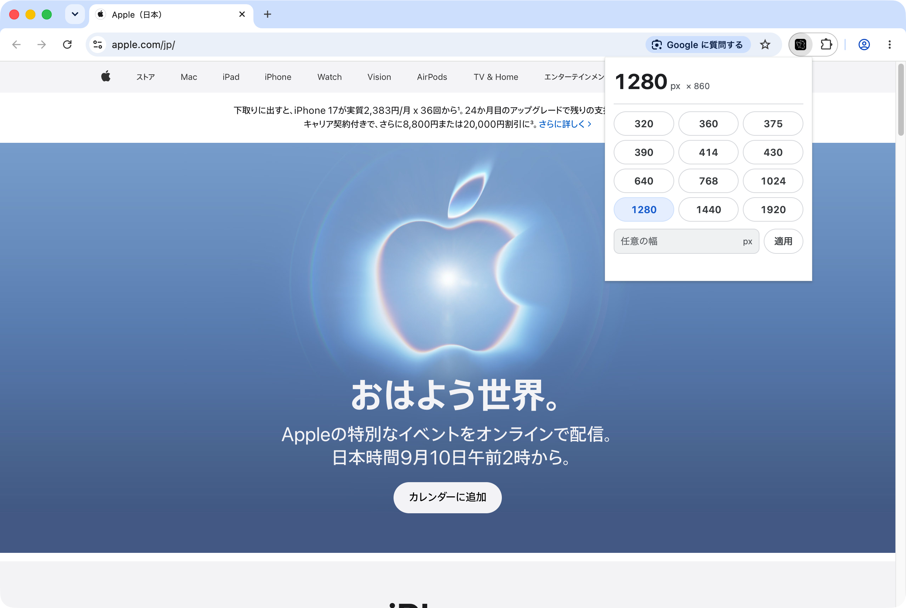

VIEWPORT BREAK — スクリーンショット実測
2026-09-02 撮影。対象は実サイト https://www.apple.com/jp/、ブラウザは Chrome/152.0.7977.65。
すべて実ウィンドウの写真です。幅の変更は製品本体（native messaging host）が
AppleScript の
set bounds で行っており、DevTools のデバイスエミュレーションは使っていません。
2026-08-30 の旧 PoC は CDP Emulation.setDeviceMetricsOverride で撮っており、
この製品の動作写真としては使えないため差し替えました。撮影方法
- 幅の変更
- extension/bin/vw（native messaging host 本体の CLI）→ AppleScript set bounds。CDP の Emulation.setDeviceMetricsOverride は使っていない。実ウィンドウが本当にその幅になっている。
- 撮影
- screencapture -x -o -l
。対象ウィンドウ 1 枚だけを撮るので、背後のデスクトップ・他アプリ・システムダイアログは写らない。 - プロファイル
- 撮影専用の空プロファイル（--user-data-dir）。ブックマークバー無し、拡張は VIEWPORT BREAK だけをツールバーに固定。
- DevTools
- 全カットで DevTools は閉じている。
実測値
| 狙った幅 | innerWidth | visualViewport | innerHeight | DPR | 横スクロール | 判定 |
|---|---|---|---|---|---|---|
| 375px | 375px | 360px | 773px | 2 | なし | ±0 |
| 390px | 390px | 375px | 773px | 2 | なし | ±0 |
| 768px | 768px | 753px | 773px | 2 | なし | ±0 |
| 1920px | 1920px | 1905px | 773px | 2 | なし | ±0 |
visualViewport が 15px 小さいのは縦スクロールバー分。innerWidth は全ケースで狙った幅と ±0px 一致した。
375px は Chrome 単体の下限 500px を下回っている。
ポップアップ（実際にツールバーから開いたもの）

native host の manifest を置いていないプロファイルでは chrome.windows.update へフォールバックし、同じ操作が 500x860 で止まった。README の「host が使えなければ 500px 止まり」と一致する。
4 幅の比較（1 CSS px = 1 画像 px。横スクロールで全体を見られる）

左から 375 / 390 / 768 / 1920px。並べた幅の比がそのまま実際の表示幅の比になっている。
各幅の画面まるごと